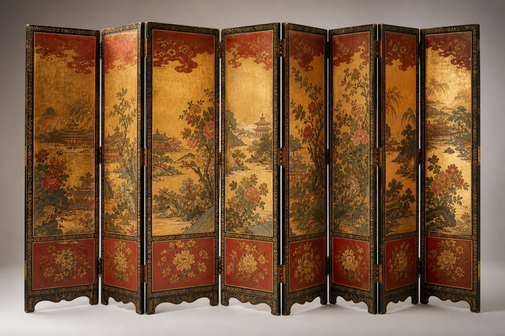
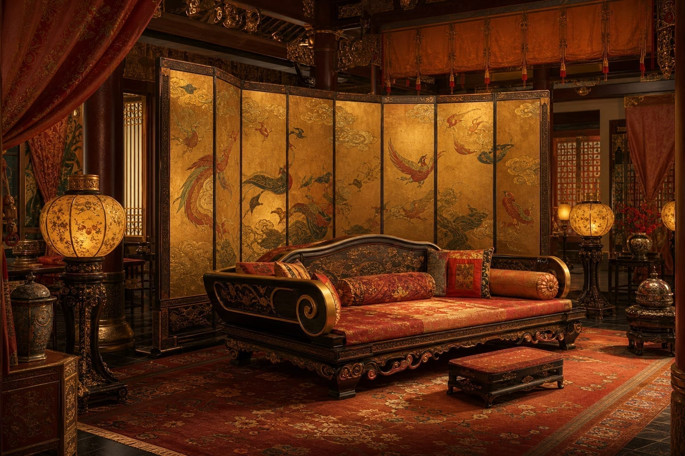
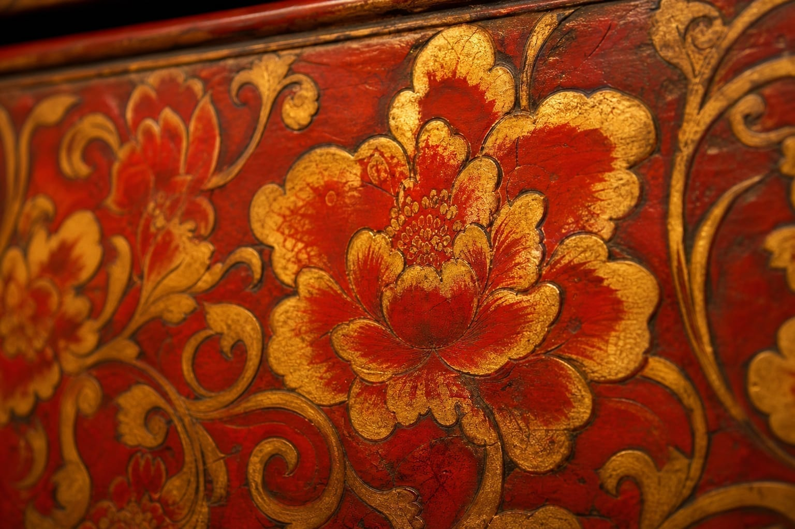
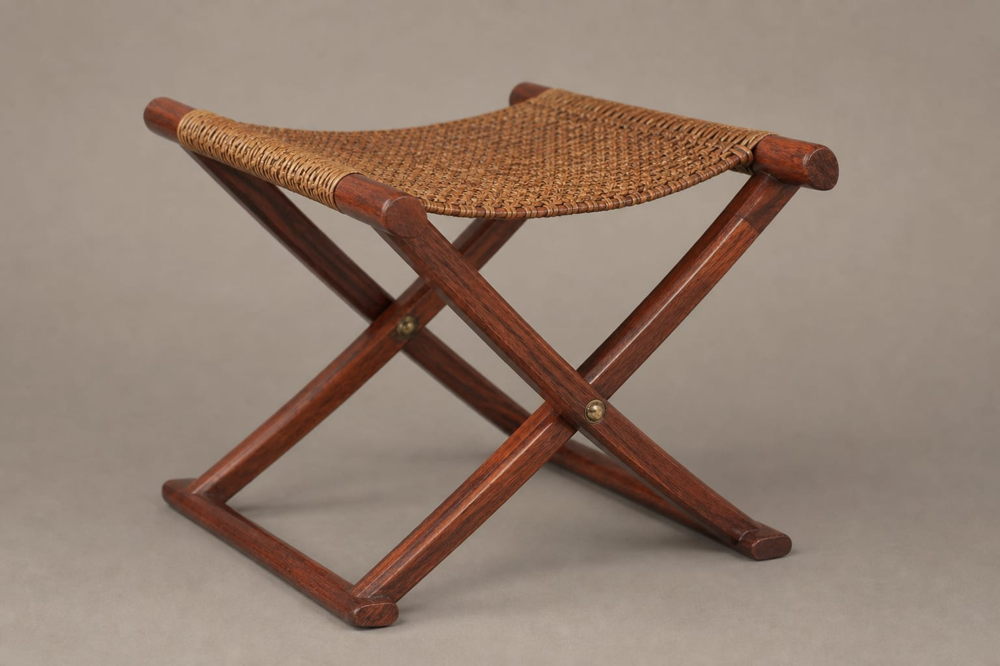
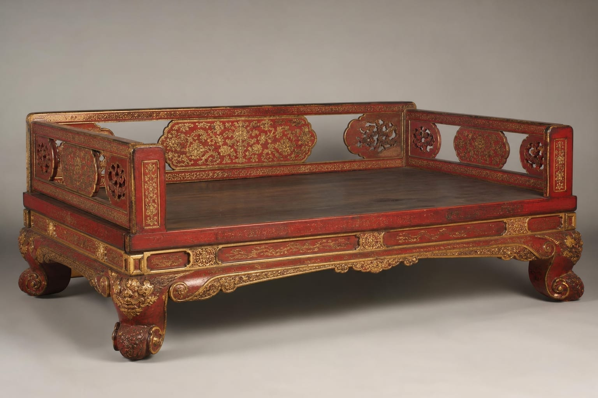

锦绣屏风
多扇折叠，屏面绘山水或缠枝纹，是空间隔断与陈设的核心。
盛唐国力强盛，文化开放，家具形制亦呈现丰腴浑厚、装饰华美之貌。从敦煌壁画到正仓院藏品，唐代家具留下了雍容大气的视觉记忆。

唐代是中国家具发展的重要转折期，席地而坐向垂足高坐过渡，床、榻、椅、凳等形制逐渐丰富。受西域文化影响，家具造型较为饱满，装饰题材多元，既有中原纹样，亦见连珠、卷草等异域元素。
心中式唐式系列，参考唐代绘画与出土文物，以榆木、樟木为主材，髹漆工艺与金漆描绘相结合，再现盛唐气派。


多扇折叠，屏面绘山水或缠枝纹，是空间隔断与陈设的核心。

可折叠便携坐具，形制源自西域，为唐代社交场所常见坐具。

宽大床面，围板雕饰，可坐可卧，尽显唐代生活气度。